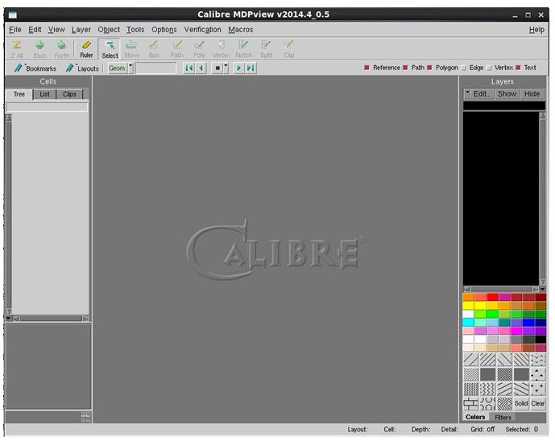
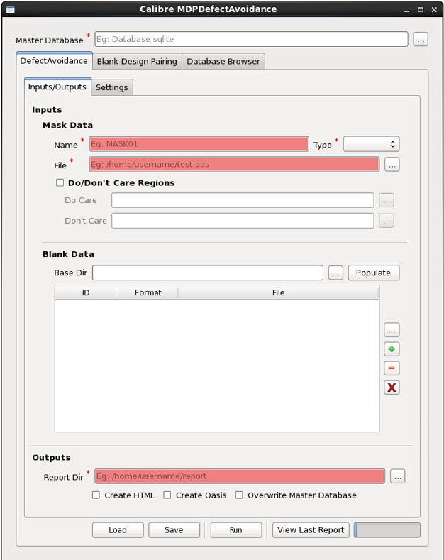

You
can invoke Calibre MDPDefectAvoidance from Calibre MDPview.
Procedure
- Invoke Calibre MDPview a command
shell using the following syntax.
calibremdpv [-remotefile remote_file]
Calibre MDPview appears.
Figure 1. Calibre MDPview 
- In Calibre MDPview, select Tools > MDPDefectAvoidance.
The Calibre MDPDefectAvoidance dialog box appears.
Figure 2. Calibre MDPDefectAvoidance
Dialog Box
- Once the GUI is launched,
specify required inputs.
- Click Run to start the defect avoidance
run.
- Refer to “Using Calibre MDPDefectAvoidance” for an overview of its usage.